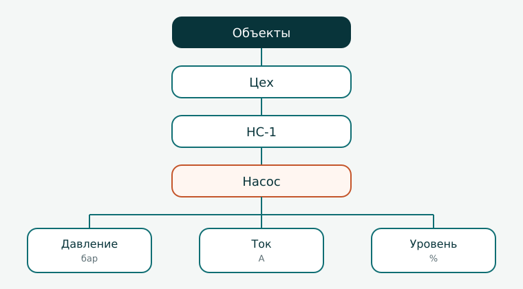

Объекты и иерархия
- создавать папки и объекты и вкладывать объект в объект;
- переносить теги в объект, не теряя привязку к хранилищу и записанные значения.
К концу урока параметры станции разложены по объектам: цех, станция, насос. Теги из прошлого урока переехали в насос вместе со своими значениями.
Список тегов удобен, пока параметров мало. Когда у станции появятся бак, второй насос, помещение с камерой, плоский список превратится в длинную ленту имён. Объекты группируют параметры так, как устроен сам объект: у каждого агрегата — свои теги.
Что собираем

Папка
В корне «Объекты» в меню узла выберите Новая папка. Справа задайте имя Цех и нажмите Записать.
Папка группирует объекты. Сама она ничего не измеряет и не хранит.
Объекты
Оставьте текущей папку «Цех». Выберите Новый объект. Имя — НС-1, описание — «Насосная станция». Нажмите Записать.
У объекта «НС-1» снова выберите Новый объект. Имя — Насос. Нажмите Записать.
«НС-1» — станция целиком. «Насос» — агрегат внутри неё. Глубина вложенности не ограничена: позже у станции появятся бак и помещение с камерой.
Перенос тегов
Раскройте корень «Теги». Выделите «Давление», затем с нажатым Ctrl добавьте «Ток» и «Уровень». Перетащите выделенные теги мышью на объект «Насос».
Тег при переносе остаётся тем же тегом: меняется только его место в дереве. Привязка к хранилищу и записанные значения сохраняются.
Проверка
- Дерево совпадает с рисунком: папка, два объекта, три тега у насоса.
- Корень «Теги» пуст.
- Чтение давления у тега в «Насосе» по-прежнему возвращает 4,2.
Дальше значения тегов читают за интервал и сравнивают историю с последним значением.